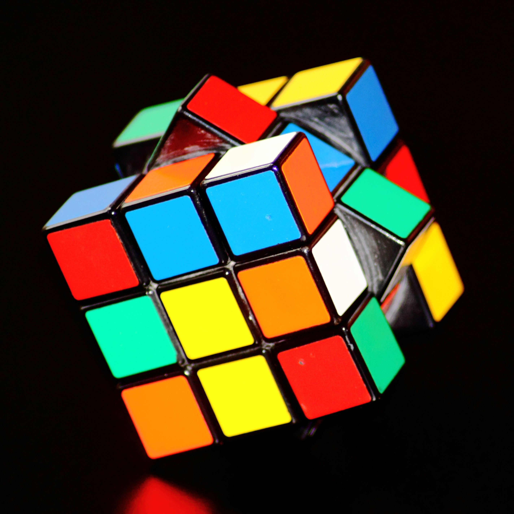

Mi Blog
Mis Gustos
-
Cubos Rubik
En el 2018 comencé a interesarme por los cubos Rubik, tuve intriga de como armarlos, así que compré el cubo más barato y empecé a ver videos de YouTube para lograrlo, anotaba los algoritmos de cada paso y sí me equivocaba empezaba de 0, después de tanto practicar pude armarlo más rápido, luego de lograrlo quería armar diferentes tipos de cubos.
-
Ver Video Juegos
Algo que me entretiene son los videojuegos, aunque no soy muy buena jugándolos, disfruto de ellos; gozo ver video-reseñas de juegos para darme una idea de que tratan, los videos que más me gustan son de gente viendo los juegos de moda.
-
Baloncesto
Gracias a mi madre, desde pequeña me ha gustado jugar baloncesto, es mi deporte favorito, me ayuda a relajarme y a olvidarme de mis problemas. Prefiero jugarlo con pocas personas y de forma no competitiva. Mi primer balón me lo dieron a los 13 años, siempre jugaba después de clases y jamás se me podía olvidar llevarlo.